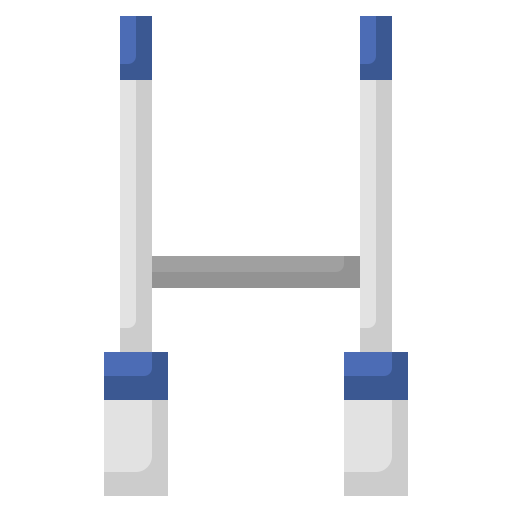

Hello, I'm Eudes 🏉 🎣
I play rugby, and I'm also a big supporter of the Stade Français, one of the two Parisian rugby teams. I'm also found of slacklining, it is essential for my life balance 😉 On holidays I spend often some of my time fishing.
Discover one of my favourite Youtube chanelSlackline 
It's a discpline that requires concentration but that brings me a lot of serenity. It makes me going further steps after steps. It's an activity where you can't fail to trust yourself, otherwise you fall instantly.
Snorkling 🤿
I love scubba-diving, it's like a hide-and-seek where you need to be very descreet if you want to see some nice fish.
Rugby 
Rugby is my favourite sport. Even if I often get injured, it is a sport where you learn how to push your physical but also your moral limits. Of course what's generally called the "third half-time" holds an important role in my commitment to this sport.